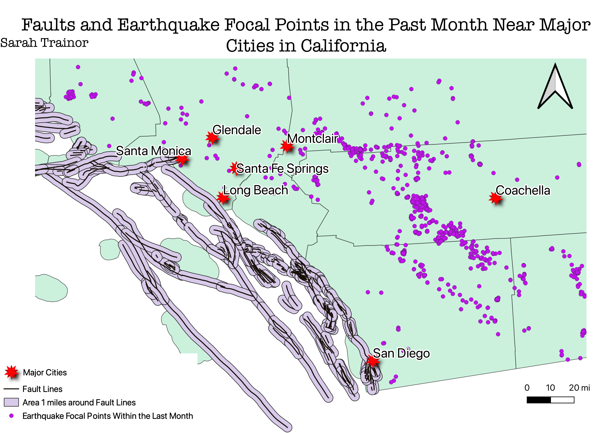

This is a map displaying major fault lines along the Pacific Plate that lay on the boarder of California.
The question I posed to answer was "How close are fault lines to major cities in California and where are these earthquakes happening?".
First, I refined my maps earthquake data within the last month to specifically earthquakes that happened in California only by doing an intersection. Next, I added a 1 mile buffer around the fault lines to help get an idea of how close these cities sit near the fault lines. To further help the viewer see the distance to the fault lines, I added a scale to my map and also put it in miles width. Finally, I added the layer of the major cities to help the viewer get more perspective of where the map is located.

Data Used for this Project
Link to Earthquake Focal Point Data
Link to Fault Lines Data
Link to Cities in California